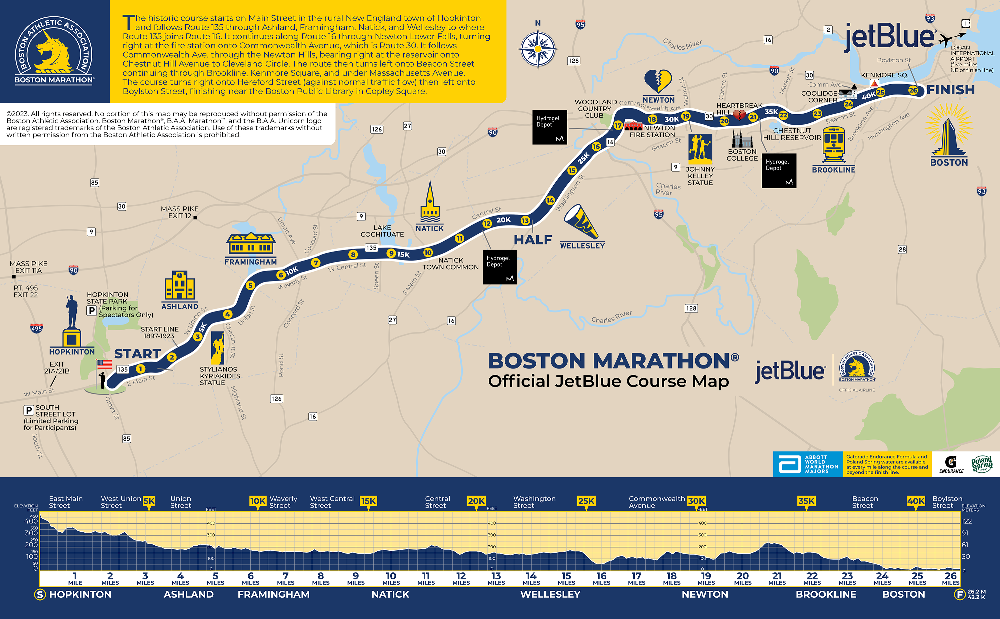

- The Boston Marathon starts on Route 135 in Hopkinton, a suburban community south-west of Boston.
- The course runs through the rural towns of Ashland, Framingham, Natick, and Wellesley, then through the city in Newton, Commonwealth Avenue, and Brookline.
- The finish line is on Boylston Street, in Copley Square near the Boston Public Library.


Here is a look at the course map:
Here is the official course preview:
- Maximum Elevation: 470 feet.
- Minimum Elevation: 10 feet.
- Elevation Gain: 815 feet.
- Elevation Loss: 1275 feet.
- Heartbreak Hill: Mile 20 features the infamous "Heartbreak Hill", which is a 91 foot climb over a half mile right when the race gets tough.


Helpful Videos to Prepare Yourself: